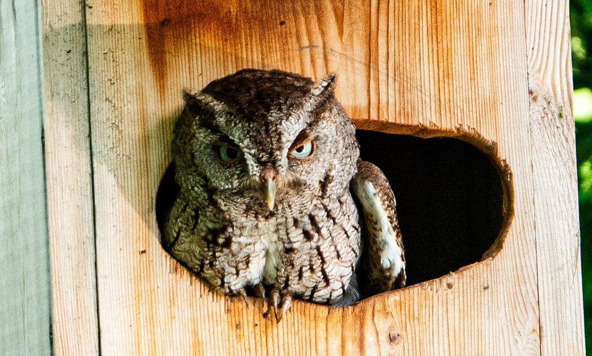

- The park's screech-owls have a habit of sitting in the rare fruit trees in plain sight - motionless, one eye cracked open, completely unbothered by people walking past. They are genuinely tiny, and students who have been shown one usually cannot believe it had been there the whole time.
- Despite the name, the screech-owl does not screech. Its usual call is a soft, descending whinny or an even, trilling purr — a gentle sound from such a capable little hunter.
- It is small, only about the size of a soda can, with feather tufts on its head that look like ears but are not.
- It comes in two color forms, gray and reddish, and both blend so well into tree bark that one can doze the day away on an open branch unnoticed.
- A nighttime hunter, it takes a wide range of prey, from insects and lizards to small rodents and birds.
Small — roughly eight to nine inches tall, about the size of a soda can.
Two feather tufts that can be raised or flattened (not actually ears).
Either gray or reddish-brown, both heavily patterned to mimic bark.
Yellow.
Two main calls, neither a true screech: a soft, descending whinny like a small horse, and an even, trilling purr on one pitch. Most often heard at dusk and after dark.
A small, stocky owl with ear tufts, roosting quietly in a tree cavity or against a trunk by day. It is far more often heard than seen — listen at dusk for a soft, descending whinny or a steady trill.
A varied hunter — large insects, spiders, earthworms, small rodents, lizards, frogs, and small birds, caught mostly at night.
Among mature trees — scan cavities and quiet, shaded trunks by day, and listen for soft whinnies and trills at dusk. Far more often heard than seen.
Year-round resident. Active at night; daytime sightings usually mean a roosting bird tucked into a cavity or against bark.
If you find a roosting owl, enjoy it quietly from a distance and move on — daytime disturbance robs it of rest. Never disturb a nest cavity.

- © Rob Carr (CC-BY-NC), via iNaturalist
- © Brice C. (CC-BY-NC), via iNaturalist